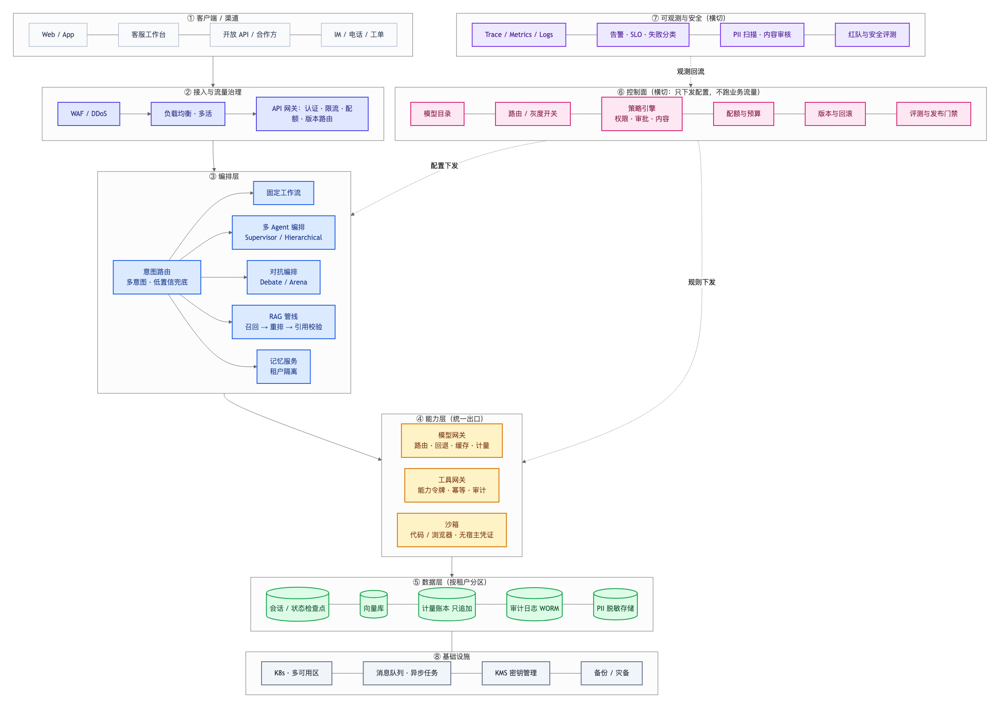

企业级参考架构
这张图和「组合架构」的区别
组合架构 讲的是一个业务场景里模式怎么组合；这张图讲的是一个企业要上线运营，系统必须长成什么样。
两者的差别不在于画得更复杂，而在于多了四类生产必需品：
| 生产必需品 | 组合架构 | 企业级 |
|---|---|---|
| 多租户与配额 | 隐含 | 显式：网关配额 + 账本归因 + 数据分区 |
| 控制面 / 数据面分离 | 混在一起 | 分离：配置下发，不跑业务流量 |
| 可观测与安全 | 事后补 | 横切：trace、SLO、PII、红队 |
| 灾备与合规 | 无 | 多可用区、备份、WORM 审计 |
一图看懂

图 1 · 八层 + 两个横切面：请求自上而下，控制面下发配置，可观测回流决策
八层各管什么
① 客户端 / 渠道
Web、App、客服工作台、开放 API、IM/电话/工单。这一层决定 SLA 和接入形态：同步问答要秒级响应，工单可以异步。
② 接入与流量治理
WAF → 负载均衡 → API 网关。企业级的重点是网关做三件事：认证、限流配额、版本路由（灰度时按租户分流）。这三件事不能下沉到业务代码里做，否则每个服务都要重写一遍。
③ 编排层
意图路由（多意图 + 低置信兜底）→ 四条路径：固定工作流 / 多 Agent / 对抗编排 / RAG，再加记忆服务。这是组合架构那张图展开的内容。
④ 能力层（统一出口）
所有对外部世界的访问只从这里出去：
- 模型网关：路由、回退、缓存、计量
- 工具网关：能力令牌、幂等、审计
- 沙箱：代码/浏览器执行，无宿主凭证
这条"统一出口"是安全底线。任何绕过能力层的调用（直连模型、直连工具）都是后门。
⑤ 数据层（按租户分区）
会话状态、向量库、计量账本、审计日志（WORM，一次写入不可改）、PII 脱敏存储。
按租户分区不是性能优化，是隔离要求：一个租户的数据/向量/账本不能和另一个混在一起，否则删除、审计、跨租户泄露全都做不了。
⑥ 控制面（横切）
模型目录、路由/灰度开关、策略引擎、配额预算、版本回滚、评测门禁。
控制面的关键定义：它只下发配置，不处理业务流量。 请求路径上只读控制面下发的配置（本地缓存），不能在每次请求时回调控制面——否则控制面挂掉，业务全挂。
⑦ 可观测与安全（横切）
Trace/Metrics/Logs、告警与 SLO、PII 扫描与内容审核、红队评测。
这一层向控制面回流数据：线上失败样本 → 评测集 → 发布门禁，形成闭环。
⑧ 基础设施
K8s 多可用区、消息队列（异步任务与长任务）、KMS 密钥管理、备份灾备。
三条不能违反的原则
原则一：控制面与数据面分离
数据面：客户端 → 网关 → 编排 → 能力 → 数据 （处理一次请求）
控制面：配置/策略/配额/版本 → 下发给数据面 （管所有请求按什么规则做）
违反的后果：把策略判断写进业务代码 → 改一条规则要发布所有服务；把配额检查做成同步 RPC → 控制面抖动导致全站限流。
原则二：所有外部访问走能力层
模型和工具只能经由网关调用。这一条对应工具网关章的核心：Agent 不能拿超级账号直连。
违反的后果：某个服务为了快直接调模型 → 计量漏记、密钥散落、无法审计、无法限流。
原则三：多租户隔离贯穿五处
租户 ID 要出现在：网关配额、编排上下文、模型/工具调用、数据分区、账本归因。少一处，就会出现"某租户看到了别人的数据"或"成本算到了别人头上"。
一次请求的完整路径（含横切）
1. 渠道 用户从 App 发起
2. 接入 WAF → LB → 网关：认证、租户配额、限流
3. 编排 意图路由（多意图）→ 选定路径
4. 能力 模型网关（路由/回退/缓存）+ 工具网关（令牌/幂等）
5. 执行 沙箱内跑代码/浏览器，无宿主凭证
6. 数据 状态写检查点、向量按租户、计量入账本、审计落 WORM
7. 横切 全程 trace；内容/PII 在输入与输出两侧审核
8. 回流 trace 与失败样本回到控制面，进评测集与门禁
从本项目迁到企业级的差距清单
诚实列出本项目（v1–v6）到这张图还差什么：
| 企业级要素 | 本项目现状 | 生产怎么做 |
|---|---|---|
| 多租户分区 | 内存 Store，单租户演示 | 每租户独立 schema/前缀 + 行级隔离 |
| 控制面 | 配置类硬编码 | 独立配置服务 + 下发缓存 + 变更审计 |
| 高可用 | 单进程 http.server | 多副本 + K8s + 健康检查 + 多可用区 |
| 长任务 | 检查点 + 租约（教学版） | 消息队列 / Temporal 类持久执行 |
| 可观测 | 进程内 Trace 对象 | OpenTelemetry 导出 + 集中存储 + SLO 看板 |
| 审计 | JSONL 文件 | WORM 存储 + 不可篡改 + 留存期管理 |
| 灾备 | 无 | 跨区备份 + 恢复演练 + RPO/RTO 指标 |
| 合规 | 文档说明 | 数据分级、出境评估、标识留痕 |
自检清单
- [ ] 能说出控制面和数据面的分工，以及混在一起会出什么问题。
- [ ] 能解释为什么所有模型/工具访问必须走能力层。
- [ ] 能说出租户隔离必须出现在哪五个地方。
- [ ] 能解释数据层"按租户分区"是隔离要求而非性能优化。
- [ ] 能说出可观测层如何回流到发布门禁，形成闭环。
- [ ] 能对照差距清单，判断自己系统离企业级还差哪几项。